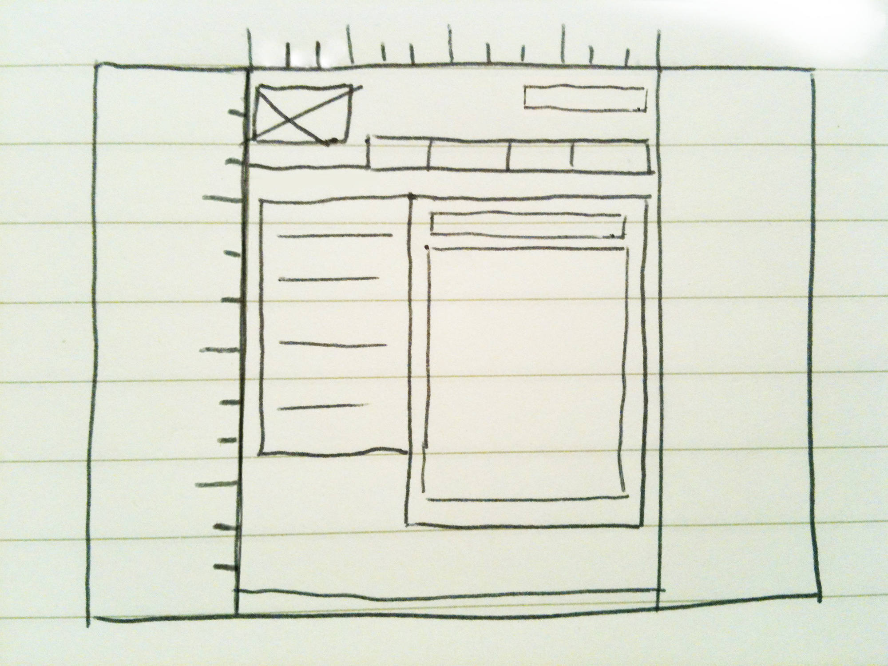
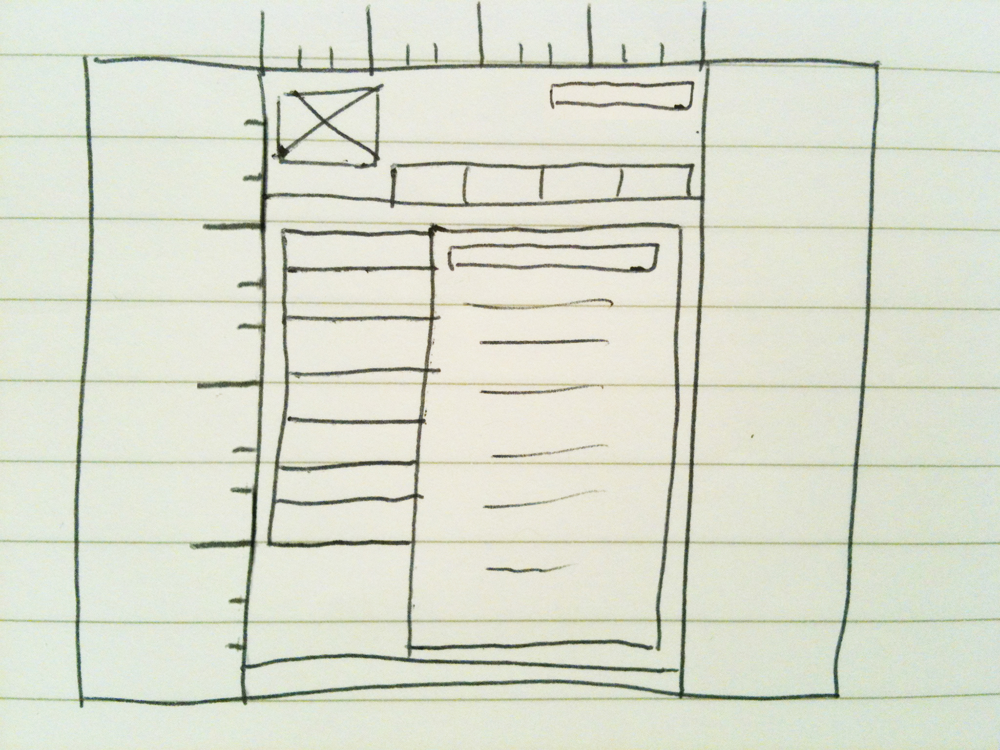
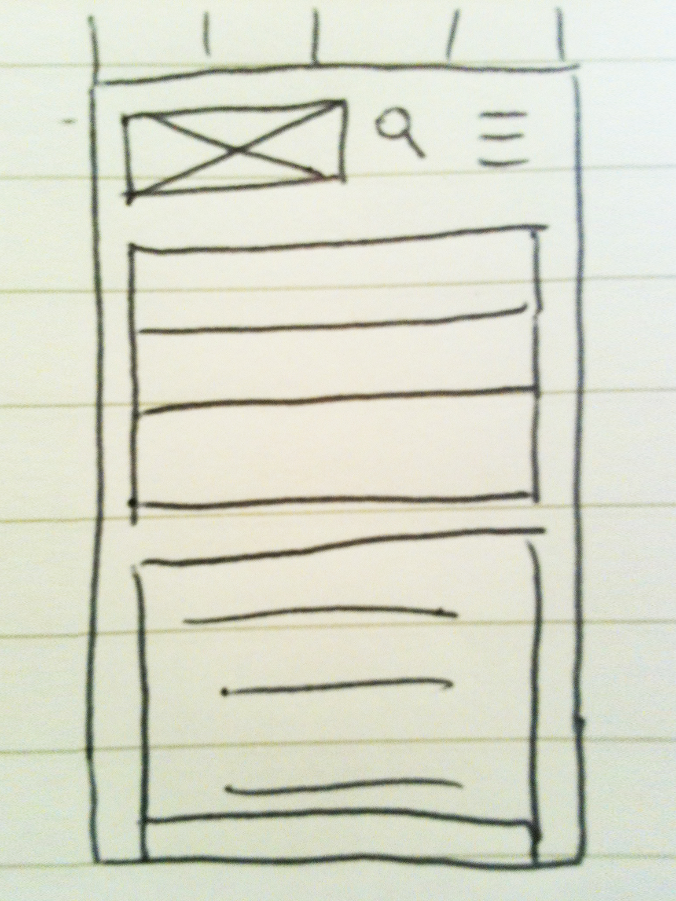
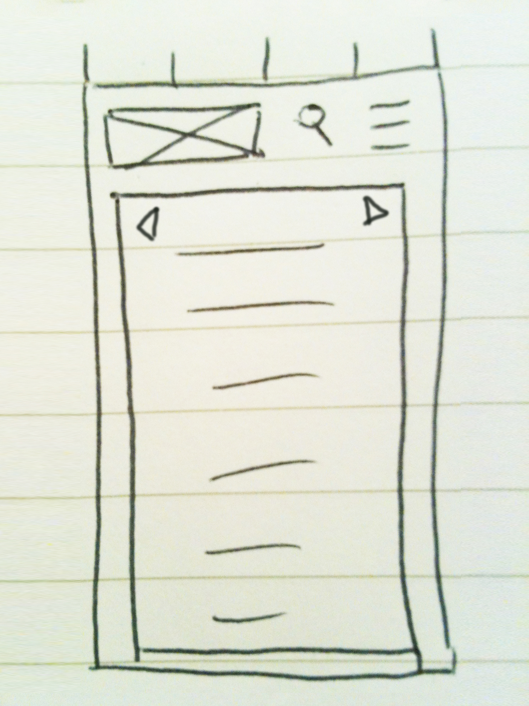

Design to Web
T3: 3rd Jan 2016
What a responsive site is, and why responsiveness is important
As mentioned in my previous blog, Udacity Reflection Part 2, a responsive site changes its look, layout, and often its functional elements depending on the screen size of the device it is viewed on.
Responsiveness is important due to the increased development and use of new devices that differ much in screen sizes. And also, the practical and economical benefits of having a site that is more functional and fast to use on such devices.
What mobile first design is, and why it's important
It is considered best practice to use mobile first design - to initially design a site using a mobile phone screen size - for the following reasons:
-
Constraints of a smaller screen size:
-
It's easier to work with more restrictions first and then later have the freedom of more space to fill. Much like moving from a studio apartment to a four bedroom house.
-
The sizes of fonts, interactive buttons, etc will usually need to be bigger on a smaller screen to be read/clicked more easily which also takes up more of the already limited space available.
-
Speed and functionality:
-
By having the mobile screen size as the default setting, the mobile device doesn't need to process all the subsequent changes as the screen size gets bigger, but rather leaves those changes for larger devices that generally have more processing capacity. This allows the pages to load faster.
-
Sites that take too long to load are often dismissed in favour of faster loading sites particularly as people are usually out and about when using mobile devices.
-
By designing for a smaller screen size first, it often allows for the development of a more efficient hierarchy as the most important/most used elements must take priority in such limited available space.
What frameworks are, and their pros and cons
Frameworks are a package made up of a structure of files and folders of standardized code which can provide a common structure so the code can be re-used.
Framework Pros:
-
Fast and convenient as code does not need to be redone from scratch.
-
Able to maintain consistent layout, styles, etc across multiple files/pages/sites.
-
High functionality is usually built in such as cross-browser settings, print only settings, responsive screen sizes, etc.
Framework Cons:
-
As the frameworks act as a default setting, it can be confusing/frustrating trying to work out what to change if something deviates from the framework.
-
Frameworks will have a lot of extra code that may not be required for your site which may slow down processing speed.
-
Restricted by the frameworks naming conventions so you need to become familiar with it and will make it harder to use your own conventions.
What a wireframe is and why we use it
A wireframe is a very basic representation - usually a black and white illustration using simple boxes - to show the general layout of a page.
By using a wireframe at the concept stage to show the basic layout of a page without any superfluous distractions, it allows you to sort out the page hierarchy, placement of elements, and communicate these to clients more efficiently. Wireframes can also be used as a template later on when the website is being built.
The wireframes I used for this website are below.
Desktop index page wireframe

Desktop blog page wireframe

Mobile index page wireframe

Mobile blog page wireframe

The aspects of your wireframes you found difficult to implement, and why
I found it difficult to get the correct width for fixed positioned elements such as the header. I ended up using some of the widths in the skeleton file, but if the screen is below 400px or greater than 1600px, the header width no longer works.
Getting images to fill the column width and not go out of the column. Again, I ended up using the skeleton semantics to get the correct class naming.
Making the columns touch in the blog posts. Because the skeleton file had default margins that I needed to overwrite in my css style sheet.
Ensuring that I could name all the elements correctly/well and having the classes wrapping around the correct content so it could be styled correctly was quite fiddly and took a lot of thinking, trial and error to work out.